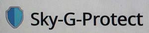

Trade Mark Journal No.2025/049 5 December 2025
UK00004295463 15 November 2025 (10)

- Class 10
- Medical examination gloves; Gloves for medical examinations; Latex examination gloves for medical use; Medical gloves; Examination gloves for medical use; Latex medical gloves; Latex gloves for medical use; Rubber gloves for medical use; Gloves for medical purposes; Gloves for medical use; Surgical gloves; Protective gloves for medical use; Medical examination sheets; Disposable protective gloves for medical purposes; Latex gloves for surgical use; Latex gloves for veterinary use; Medical examination lamps; Latex gloves for dental use; Rubber gloves for surgical use; Medical examination tables; Stirrups for use with medical examination tables; Medical stethoscopes; Protective gloves for veterinary use; Gloves for dental use; Gloves for use in hospitals; Gloves for veterinary use; Medical hosiery; Disposable gloves for surgical use; Patient examination gowns; Disposable gloves for veterinary use; Medical diagnostic saliva pads; Medical syringes; Surgical examination drapes; Medical masks; Mittens for medical use; Massage (Gloves for -); Gloves for massage; Inflation syringes for medical or surgical use; Medical gowns; Protective breathing masks for medical applications; Sanitary masks for medical use; Clothing, headgear and footwear for medical personnel and patients; Medical tables for examination or treatment purposes; Medical probes; Diagnostic apparatus for medical purposes used in medical laboratories; Medical and surgical laparoscopes; Medical and surgical catheters; Medical scissors; Dental examination chairs; Medical diagnostic apparatus for medical purposes; Medical spatulas; Protective breathing masks made of non-woven materials for medical applications; Medical diagnostic saliva vials; Medical isolation gowns; Membrane test plates for use in medical diagnostics; Socks (Elasticated -) for medical purposes; Medical prostheses; Pressure garments for medical treatment; Medical tubing; Examination chairs specially made for medical use; Diagnostic, examination, and monitoring equipment; Apparatus for blood tests [for medical use]; Medical analytical apparatus for medical purposes; Protective clothing for medical purposes; Protective clothing for surgical purposes; Protective visors for medical use; Protective masks for medical purposes; Protective visors for surgical use; Protective visors for veterinary use; Protective visors for dental use; Isolation booths fitted with medical equipment; Protective guards for catheters; Protective screens for protection whilst exposed to x-rays [medical use]; Protective mouth masks for medical use; Protective structures against radiation [for medical use]; Dental equipment; Protective nose masks for medical use; Protective breathing masks for surgical applications; Protective breathing masks made of non-woven materials for surgical applications; Physical therapy equipment; Protective face masks for medical use.
Skygold Resources Limited
Chinedu Iloka
Ifeoma Iloka